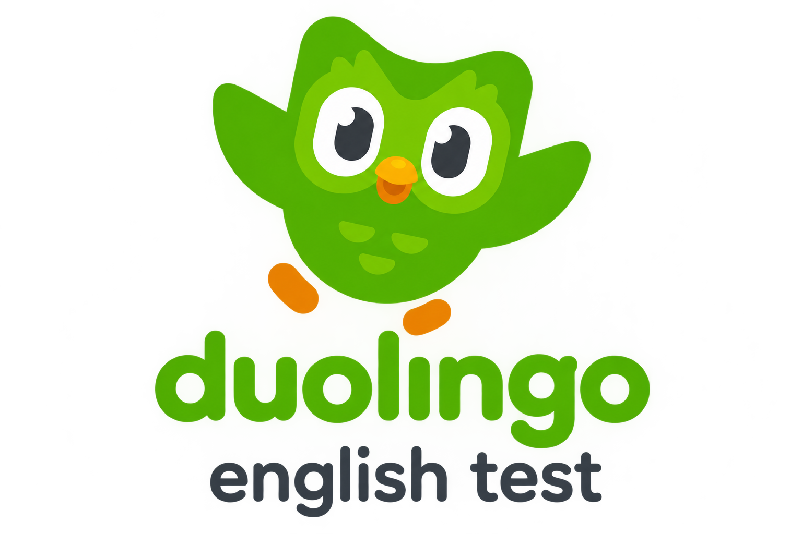
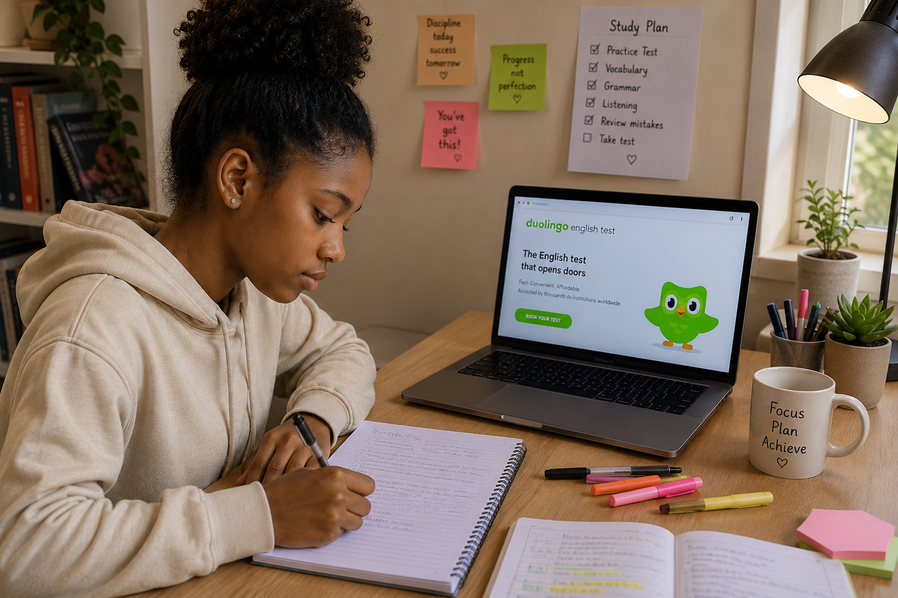

Duolingo English Test (DET)
A convenient online English proficiency test that can be taken from home.
Go to official website →English proficiency tests are used by many universities to assess whether applicants can study successfully in an English-speaking academic environment. Learn about the main tests, how they work, where to practice and how to prepare without spending money unnecessarily.

If you're applying to study in English, a university may ask you to prove that you can understand and communicate effectively in the language. An English proficiency test gives the university a standardized way to assess your language ability.
Some universities may waive this requirement in certain circumstances, while others may require a specific test or minimum score.
Different universities accept different English proficiency tests. Compare the options below before choosing one.

A convenient online English proficiency test that can be taken from home.
Go to official website →A widely recognized English proficiency test used for study, work and other purposes.
Go to official website →An academic English test designed around the reading, listening, speaking and writing skills used in university settings.
Go to official website →| Feature | Duolingo English Test (DET) | IELTS | TOEFL iBT |
|---|---|---|---|
| Where taken | Online / from home | Test centre / online options | Test centre / Home Edition |
| Speaking format | Computer | Human examiner | Computer |
| Results | Varies | Varies by option | Varies |
| Score system | 10–160 | 0–9 bands | 1–6 + comparable 0–120 |
| Preparation | Official free resources | Official free resources | Official free resources |
| Fees / Cost | Varies | Varies | Varies |
| Validity | 2 years | 2 years | 2 years |
Fees, availability and test options may vary by country. Check the official test provider before registering.
Don't register for a test before you know what to expect. Use free practice resources to understand the format, identify your weak areas and build confidence.
Start with your university, not the test.
You don't have to wait until you're preparing for a test. Small amounts of English practice every day can improve your reading, listening, speaking, writing and vocabulary.
Grammar, vocabulary, listening, reading, videos and everyday English.
Visit LearnEnglish →Improving your English doesn't have to mean reading textbooks all day. These classic stories are engaging, accessible and available to read online for free through Project Gutenberg.
Choose a story that matches your interests and enjoy reading at your own pace. You may discover that improving your English can also be fun.
Follow Sherlock Holmes as he solves unusual cases through observation, logic and clever deduction. The collection contains shorter mysteries, making it a good choice if you enjoy suspense and unexpected discoveries.
Read free →A young boy becomes involved in a dangerous search for buried treasure. Pirates, secret plans and questions about who can be trusted keep the story moving.
Read free →Friendship, adventure, romance and political intrigue come together as a young man joins forces with three legendary musketeers. Expect danger, deception and plenty of unexpected turns.
Read free →A scientist travels far into the future and discovers a world completely different from his own. It is a relatively short story filled with mystery, exploration and unsettling discoveries.
Read free →Alice falls into a strange world where almost anything can happen. The unusual characters, wordplay and unpredictable events make this a playful way to encounter English through fantasy.
Read free →These books are available through Project Gutenberg as free online editions of classic works. Copyright status can vary by country, so readers should consider their local copyright rules before downloading or redistributing an edition.